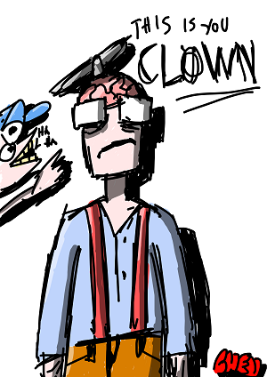
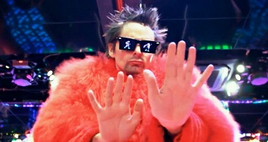
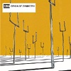
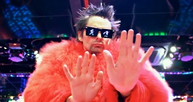
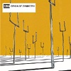

Romanian cunt, I like music and shit, that's about it...
Social Media SUCKS. It's made by the antichrist and the government, in other words, MK ULTRA 2.0. That's right, it was never discontinued, they just renamed it to Twitter! This is why personal sites are better.
Despite my evergrowing hatred toward social media (especially instagram and twitter), I do have a discord account, if ye wanna chat, feel free to dm me at:
Head Priest#3776.
Over the years I had many hobbies that came and went, there are hobbies I had for a month and hobbies I still have.
I play bass. One of my favourite hobbies. I'm no virtuoso but it's a fun skill to have, considering less and less people learn to play instruments.
I love sketching and doodling whatever comes into my mind, it ussually results in really weird drawings that look like the insane ramblings of a crazy person. I ussualy do them with a fountain pen for no reason. I can't force myself so sketch, the urge comes naturally and my hand is basically loose when I draw. It's basically a state of mind for me lol.
But I do also have some more normal (I guess) drawings. I also used to do graffity for a bit.

I made some music around 2 years ago, it's not great or high effort, I don't think I spent more than 30 minutes to make any song. But it's something I enjoyed and might do again sometime.
I also do 3d modeling. Nothing fancy, but it is a fun hobby and I do reccomend it, especially if you have a decent computer. Here is a model of a bottle I have in real life.
My favourite band has to be Muse. It's basically a weird combination of rock and classical music. Every album has it's own feel, from the gritty rapid bass of Absolution, with songs like Hysteria (which has one of the hardest basslines ever to be made), to the almost sci-fi synths of The Resistance. I don't really have a favourite song since there are so many that are equally good. But I do think Black Holes and Revelations is my favourite album, with Origin Of Symmetry close behind.
I cannot wait for their new album "The Will of the People" that comes out on 27th of August.


 BIO
BIO
 Romanian cunt, I like music and shit, that's about it...
Romanian cunt, I like music and shit, that's about it...


 HOBBIES
HOBBIES


 Favourite Media
Favourite Media 
